packages/boot/cmdline/)dsh web / --profile headless "task" / --dump-config 等参数,转发到 Profile Loader。packages/boot/cmdline/src/index.ts — argv 解析packages/boot/cmdline/src/profile.ts — profile 选择packages/boot/app-boot/)packages/boot/app-boot/src/profile.ts — profile 选择 + bundle list 解析packages/boot/app-boot/src/bundle.ts — bundle 加载 + 叠加packages/boot/app-boot/src/patch.ts — cordis patch.yml 解析
packages/bundle/)packages/bundle/base/ — 共享第一层(model adapter / tools / persistence / sandbox / approval / settings / credentials / telemetry),web/headless/sdk/acp 四个 profile 都叠这个packages/bundle/web-app/ — 浏览器应用packages/bundle/headless/ — 一次性 runner,无 serverpackages/bundle/sdk-app/ — SDK JSON-RPC serverpackages/bundle/acp-app/ — ACP automation serverpackages/bundle/sdk-minimal/ — 显式例外:一个 bundle 拥有完整显式 SDK 树,不应用 dsh-base
dsh-sdk-minimal 故意不叠 dsh-base。它是一个完整的显式 SDK 树,而不是基于共享第一层。改 dsh-base 时要小心,可能影响 4 个 profile。
从下到上,按这个顺序:
每层都能 替换 上一层的某一行(按 id 匹配),或 插入 新行。完整树形见 dsh --profile web --dump-config。
@deepseek-ai/cordis)ctx.effect() / ctx.on() 返回 disposervendor/cordis/ — vendored sourcedocs/cordis-primer.md — 入门core/session。ctx.sessionspackages/core/session/src/index.ts — exports + registrationspackages/core/session/src/store.ts — SQLite storepackages/core/session/src/project.ts — 内存投影| 决策 | 理由 |
|---|---|
| Profile = bundle 列表 + patch.yml | 配置可移植——一个 profile 描述完所有 mount 顺序 |
| Bundle 是"配置行 + 代码" | 上层 bundle 可 patch 下层 bundle 的任意配置行 |
Live patch reload(web profile) |
开发时改 patch 不需要重启 |
One-shot profiles(headless / sdk)启动时只应用一次 |
替换一次性应用的依赖会作废生命周期 |
所有 npm 包 = @deepseek-ai/dsh-<name> |
统一作用域,vendored 重新作用域化,private: true |
@deepseek-ai/cordis 是所有包的 peerDependency |
避免重复安装,所有 plugin 共享同一份 Cordis |
$ dsh --profile web --dump-config
# 打印完整的 Cordis config 树
# 每行可以被 patch.yml 替换或者用开发模式:
$ dsh --profile web --dev
# 启用 live reload + 详细日志AGENTS.md 第 105-120 行):
ctx.effect() / ctx.on();register() 返回 disposer./invariant@mode + payload @paramassertNever;merge-extensible union 有文档化 defaultnext(): 不调 = 短路整条链